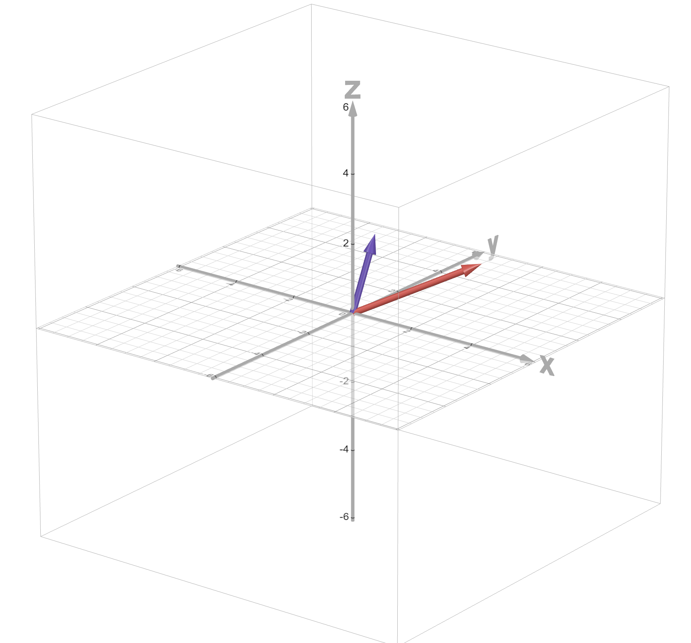

December 14, 2025
History of language models from Markov to GPT. Blog holds the implementations of various LLMs along with the analysis of their components.

April 15, 2026
Exclusive self-attention is simple yet seems effective way to improve model performance